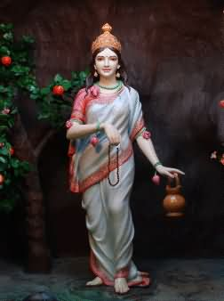

|
|||||
lordess sakthi
NAVA DURGA
BRAHMACHARINI
|
 |
|
The second power of Goddess Durga isknown by the name of Brahmacharini , in this form, the Goddess is going to perform rigorous penance, she is going to behave like Brahma's churni i.e. harsh heat. On the face of Goddess, Ardha Chandra and various types of ornaments hold and chanting in your right hand and holding a knot in the left hand, the Goddess is with three eyes. By being born as a girl in the Himalayas , theyresolved firmly and firmly to get Lord Shiva in her husband's form. According to his determined determination, the Goddess Sarva-Istarted visiting Lord Shiva every dayand started serving them. But, the service of the Goddesshad no effect on Lord Shiva ; they remained meditation; Gods workSent to dissolve their practice, but work-use arrowy to Lord Shiva the work God has consumed. Seeing this Goddess was scared, after sacrificing the service of Lord Shiva , they began to moan loudly. Lord Shiva also got interrupted there , ultimately according to the teachings of Narada , Goddess started harsh tenacity to get Lord Shiva in her husband's form. Due to their grave and severe penance, they were called BrahmachariName received For 3 thousand years, he remained a fast and unhygienic and did penance; In the first year, the Goddess only made the fruit, then after the second year only the food of the leaves, for the third year, they gave up the feeders of the leaves; Aparna is also a name because of abandoning leaves or leaf feeders . Because of his hard penance, there was a stroke in all three places, even Brahma ji himself was greeted by him, Akashwani had said that! "No one has ever done such a harsh heat till today, your wish will be fulfilled." After sacrificing Sati's body, Lord Shiva completely embraced and after going to the Himalaya Mountains, he started to meditate on yoga meditation, lost his natural work and the world. There, Tarakasura was well public!"Shivaji is a resident, if there is no question of marriage, how can a child be born?" These are his harsh austerity Brahmacharini Goddess by Lord Shiva distracted, be prepared for them to eventually get married, celebrated. This deity of Goddess Durga is going to give infinite fruits to the devotee; His means are used for the increase of tenacity, renunciation, dislike, virtuous restraint; The second date of the new night is dedicated to Brahmacharini Devi.
|